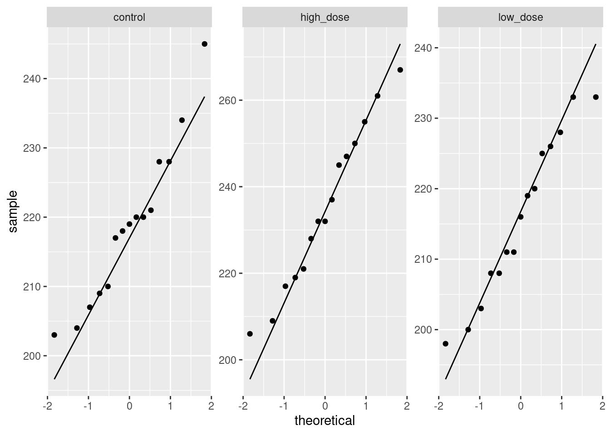
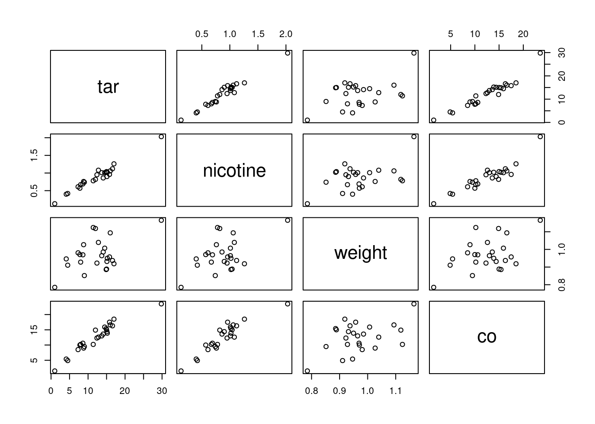

Chapter 19 Regression with categorical variables
19.1 Crickets revisited
This is a continuation of the crickets problem that you may have seen before (minus the data tidying).
Male tree crickets produce “mating songs” by rubbing their wings together to produce a chirping sound. It is hypothesized that female tree crickets identify males of the correct species by how fast (in chirps per second) the male’s mating song is. This is called the “pulse rate”. Some data for two species of crickets are in link as a CSV file. The columns are species (text), temperature, and pulse rate (numbers). This is the tidied version of the data set that the previous version of this question had you create. The research question is whether males of the different species have different average pulse rates. It is also of interest to see whether temperature has an effect, and if so, what.
Read the data into R and display what you have.
Do a two-sample \(t\)-test to see whether the mean pulse rates differ between species. What do you conclude?
Can you do that two-sample \(t\)-test as a regression?
The analysis in the last part did not use temperature, however. Is it possible that temperature also has an effect? To assess this, draw a scatterplot of pulse rate against temperature, with the points distinguished, somehow, by the species they are from. This was the actual reason I thought of this question originally: I wanted you to do this.
What does the plot tell you that the \(t\)-test doesn’t? How would you describe differences in pulse rates between species now?
Fit a regression predicting pulse rate from species and temperature. Compare the P-value for species in this regression to the one from the \(t\)-test. What does that tell you?
Make suitable residual plots for the regression
pulse.1.
My solutions follow:
19.2 Crickets revisited
This is a continuation of the crickets problem that you may have seen before (minus the data tidying).
Male tree crickets produce “mating songs” by rubbing their wings together to produce a chirping sound. It is hypothesized that female tree crickets identify males of the correct species by how fast (in chirps per second) the male’s mating song is. This is called the “pulse rate”. Some data for two species of crickets are in link as a CSV file. The columns are species (text), temperature, and pulse rate (numbers). This is the tidied version of the data set that the previous version of this question had you create. The research question is whether males of the different species have different average pulse rates. It is also of interest to see whether temperature has an effect, and if so, what.
- Read the data into R and display what you have.
Solution
Nothing terribly surprising here:
##
## ── Column specification ──────────────────────────────────────────────────────────────────────────────────────────────────────────────────────────────────────────────────────────────────────
## cols(
## species = col_character(),
## temperature = col_double(),
## pulse_rate = col_double()
## )31 crickets, which is what I remember. What species are there?
That looks good. We proceed.
\(\blacksquare\)
- Do a two-sample \(t\)-test to see whether the mean pulse rates differ between species. What do you conclude?
Solution
Drag your mind way back to this:
##
## Welch Two Sample t-test
##
## data: pulse_rate by species
## t = 5.2236, df = 28.719, p-value = 1.401e-05
## alternative hypothesis: true difference in means is not equal to 0
## 95 percent confidence interval:
## 14.08583 32.22677
## sample estimates:
## mean in group exclamationis mean in group niveus
## 85.58571 62.42941There is strong evidence of a difference in means (a P-value around 0.00001), and the confidence interval says that the mean chirp rate is higher for exclamationis. That is, not just for the crickets that were observed here, but for all crickets of these two species.
\(\blacksquare\)
- Can you do that two-sample \(t\)-test as a regression?
Solution
Hang onto the “pulse rate depends on species” idea and try
that in lm:
##
## Call:
## lm(formula = pulse_rate ~ species, data = crickets)
##
## Residuals:
## Min 1Q Median 3Q Max
## -20.486 -9.458 -1.729 13.342 22.271
##
## Coefficients:
## Estimate Std. Error t value Pr(>|t|)
## (Intercept) 85.586 3.316 25.807 < 2e-16 ***
## speciesniveus -23.156 4.478 -5.171 1.58e-05 ***
## ---
## Signif. codes: 0 '***' 0.001 '**' 0.01 '*' 0.05 '.' 0.1 ' ' 1
##
## Residual standard error: 12.41 on 29 degrees of freedom
## Multiple R-squared: 0.4797, Adjusted R-squared: 0.4617
## F-statistic: 26.74 on 1 and 29 DF, p-value: 1.579e-05I had to use “model 0” for this since I already have a
pulse.1 below and I didn’t want to go down and renumber
everything.
Look along the speciesniveus line. Ignoring the fact that it
is negative, the \(t\)-statistic is almost the same as before (5.17 vs.
5.22) and so is the P-value (\(1.4 \times 10^{-5}\) vs. \(1.6 \times 10^{-5}\)).
Why aren’t they exactly the same? Regression is assuming equal
variances everywhere (that is, within the two species), and
before, we did the Welch-Satterthwaite test that does not assume equal
variances. What if we do the pooled \(t\)-test instead?
##
## Two Sample t-test
##
## data: pulse_rate by species
## t = 5.1706, df = 29, p-value = 1.579e-05
## alternative hypothesis: true difference in means is not equal to 0
## 95 percent confidence interval:
## 13.99690 32.31571
## sample estimates:
## mean in group exclamationis mean in group niveus
## 85.58571 62.42941Now the regression and the \(t\)-test do give exactly the same answers. We’ll think about that equal-spreads assumption again later.
\(\blacksquare\)
- The analysis in the last part did not use temperature, however. Is it possible that temperature also has an effect? To assess this, draw a scatterplot of pulse rate against temperature, with the points distinguished, somehow, by the species they are from. This was the actual reason I thought of this question originally: I wanted you to do this.
Solution
One of the wonderful things about ggplot is that doing
the obvious thing works:

\(\blacksquare\)
- What does the plot tell you that the \(t\)-test doesn’t? How would you describe differences in pulse rates between species now?
Solution
The plot tells you that (for both species) as temperature goes up, pulse rate goes up as well. Allowing for that, the difference in pulse rates between the two species is even clearer than it was before. To see an example, pick a temperature, and note that the mean pulse rate at that temperature seems to be at least 10 higher for exclamationis, with a high degree of consistency. The \(t\)-test mixed up all the pulse rates at all the different temperatures. Even though the conclusion was clear enough, it could be clearer if we incorporated temperature into the analysis. There was also a potential source of unfairness in that the exclamationis crickets tended to be observed at higher temperatures than niveus crickets; since pulse rates increase with temperature, the apparent difference in pulse rates between the species might have been explainable by one species being observed mainly in higher temperatures. This was utterly invisible to us when we did the \(t\)-test, but it shows the importance of accounting for all the relevant variables when you do your analysis. And it shows the value of looking at relevant plots. If the species had been observed at opposite temperatures, we might have concluded Mistakenly. that niveus have the higher pulse rates on average. I come back to this later when I discuss the confidence interval for species difference that comes out of the regression model with temperature.
\(\blacksquare\)
- Fit a regression predicting pulse rate from species and temperature. Compare the P-value for species in this regression to the one from the \(t\)-test. What does that tell you?
Solution
This is actually a so-called “analysis of covariance model”, which properly belongs in D29, but it’s really just a regression:
##
## Call:
## lm(formula = pulse_rate ~ species + temperature, data = crickets)
##
## Residuals:
## Min 1Q Median 3Q Max
## -3.0128 -1.1296 -0.3912 0.9650 3.7800
##
## Coefficients:
## Estimate Std. Error t value Pr(>|t|)
## (Intercept) -7.21091 2.55094 -2.827 0.00858 **
## speciesniveus -10.06529 0.73526 -13.689 6.27e-14 ***
## temperature 3.60275 0.09729 37.032 < 2e-16 ***
## ---
## Signif. codes: 0 '***' 0.001 '**' 0.01 '*' 0.05 '.' 0.1 ' ' 1
##
## Residual standard error: 1.786 on 28 degrees of freedom
## Multiple R-squared: 0.9896, Adjusted R-squared: 0.9888
## F-statistic: 1331 on 2 and 28 DF, p-value: < 2.2e-16The P-value for species is now \(6.27\times 10^{-14}\) or 0.00000000000006, which is even less than the P-value of 0.00001 that came out of the \(t\)-test. That is to say, when you know temperature, you can be even more sure of your conclusion that there is a difference between the species.
The R-squared for this regression is almost 99%, which says that if you know both temperature and species, you can predict the pulse rate almost exactly.
In the regression output, the slope for species is about \(-10\). It is
labelled speciesniveus. Since species is categorical,
lm uses the first category, exclamationis, as the
baseline and expresses each other species relative to that. Since the
slope is about \(-10\), it says that at any given temperature, the mean
pulse rate for niveus is about 10 less than for
exclamationis. This is pretty much what the scatterplot told
us.
We can go a little further here:
## 2.5 % 97.5 %
## (Intercept) -12.436265 -1.985547
## speciesniveus -11.571408 -8.559175
## temperature 3.403467 3.802038The second line says that the pulse rate for niveus is between about 8.5 and 11.5 less than for exclamationis, at any given temperature (comparing the two species at the same temperature as each other, but that temperature could be anything). This is a lot shorter than the CI that came out of the \(t\)-test, that went from 14 to 32. This is because we are now accounting for temperature, which also makes a difference. (In the \(t\)-test, the temperatures were all mixed up). What we also see is that the \(t\)-interval is shifted up compared to the one from the regression. This is because the \(t\)-interval conflates Mixes up. two things: the exclamationis crickets do have a higher pulse rate, but they were also observed at higher temperatures, which makes it look as if their pulse rates are more higher This is actually grammatically correct. than they really are, when you account for temperature.
This particular model constrains the slope with temperature to be the same for both species (just the intercepts differ). If you want to allow the slopes to differ between species, you add an interaction between temperature and species:
##
## Call:
## lm(formula = pulse_rate ~ species * temperature, data = crickets)
##
## Residuals:
## Min 1Q Median 3Q Max
## -3.7031 -1.3417 -0.1235 0.8100 3.6330
##
## Coefficients:
## Estimate Std. Error t value Pr(>|t|)
## (Intercept) -11.0408 4.1515 -2.659 0.013 *
## speciesniveus -4.3484 4.9617 -0.876 0.389
## temperature 3.7514 0.1601 23.429 <2e-16 ***
## speciesniveus:temperature -0.2340 0.2009 -1.165 0.254
## ---
## Signif. codes: 0 '***' 0.001 '**' 0.01 '*' 0.05 '.' 0.1 ' ' 1
##
## Residual standard error: 1.775 on 27 degrees of freedom
## Multiple R-squared: 0.9901, Adjusted R-squared: 0.989
## F-statistic: 898.9 on 3 and 27 DF, p-value: < 2.2e-16To see whether adding the interaction term added anything to the
prediction,
Though it’s hard to imagine being able to improve on an R-squared of 99%.
compare the model with and without using anova:
There’s no significant improvement by adding the interaction, so
there’s no evidence that having different slopes for each species is
necessary. This is the same interpretation as any anova for
comparing two regressions: the two models are not significantly
different in fit, so go with the simpler one, that is, the one without
the interaction.
Note that anova gave the same P-value as did the
\(t\)-test for the slope coefficient for the interaction in
summary, 0.254 in both cases. This is because there were only
two species and therefore only one slope coefficient was required to
distinguish them. If there had been three species, we would have had
to look at the anova output to hunt for a difference among
species, since there would have been two slope coefficients, each with
its own P-value.
This wouldn’t have told us about the overall effect of species.
If you haven’t seen interactions before, don’t worry about this. The
idea behind it is that we are testing whether we needed lines with
different slopes and we concluded that we don’t. Don’t worry so much
about the mechanism behind pulse.2; just worry about how it
somehow provides a way of modelling two different slopes, one for each
species, which we can then test to see whether it helps.
The upshot is that we do not need different slopes; the model
pulse.1 with the same slope for each species describes what
is going on.
ggplot makes it almost laughably easy to add regression lines
for each species to our plot, thus:
ggplot(crickets, aes(x = temperature, y = pulse_rate, colour = species)) +
geom_point() + geom_smooth(method = "lm", se = F)## `geom_smooth()` using formula 'y ~ x'
The lines are almost exactly parallel, so having the same slope for each species makes perfect sense.
\(\blacksquare\)
- Make suitable residual plots for the regression
pulse.1.
Solution
First, the plot of residuals against fitted values (after all, it is a regression):

This looks nice and random.
Now, we plot the residuals against the explanatory variables. There
are two, temperature and species, but the latter is categorical. We’ll
have some extra issues around species, but before we get to that, we
have to remember that the data and the output from the regression are
in different places when we plot them. There are different ways to get
around that. Perhaps the simplest is to use pulse.1 as our
“default” data frame and then get temperature from the
right place:

I don’t see anything untoward there.
Species. We want to compare the residuals for the two species, which is categorical. Since the residuals are quantitative, this suggests a boxplot. Remembering to get species from the right place again, that goes like this:

For the residuals, the median should be zero within each group, and the two groups should be approximately normal with mean 0 and about the same spread. Same spread looks OK, since the boxes are almost exactly the same height, but the normality is not quite there, since both distributions are a little bit skewed to the right. That would also explain why the median residual in each group is a little bit less than zero, because the mathematics requires the overall mean residual to be zero, and the right-skewness would make the mean higher than the median.
Is that non-normality really problematic? Well, I could look at the normal quantile plot of all the residuals together:

There’s a little weirdness at the top, and a tiny indication of a curve (that would suggest a little right-skewedness), but not really much to worry about. If that third-highest residual were a bit lower (say, 3 rather than 3.5) and maybe if the lowest residual was a bit lower, I don’t think we’d have anything to complain about at all.
So, I’m not worried.
\(\blacksquare\)